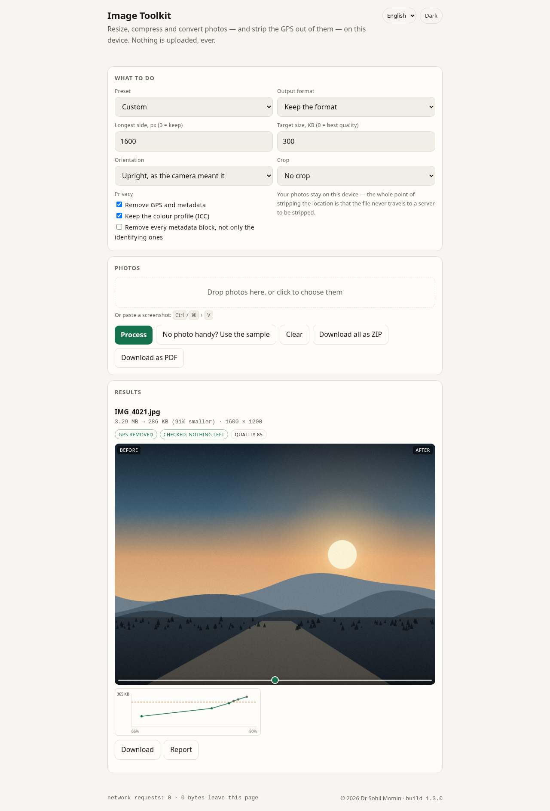

The photo never
leaves the room.
Every other “compress my image” page uploads the photo first. This one cannot: there is no server to upload it to. Resize, compress, convert, crop, rotate and strip the GPS — and paste a screenshot straight in — on the machine you are holding.
The demo is the app
Live, in this frame
Not a video, not a screenshot: the same page you get from Open the app, running here. There is no photo handy on a first visit, so the app paints one — 3200 × 2400 with a real GPS block in it — and then does the work.

Every button above drives the real page. The photo in it is painted by the page itself, from code — there is no sample file to fetch and nothing to download.
What it does
What people actually do to a photo before sending it
And a sixth, which is to say honestly what happened to it.
Contain inside a box
Aspect kept, never upscaled, never rounded to zero pixels. Ask for 1600 and a 4000 px photo becomes 1600; ask for 1600 and a 900 px photo stays 900. Shrinking by more than half is done in halving steps, so the detail survives the trip. Crop to a square or a story, turn it, mirror it.
Hit a byte budget
The highest quality that still fits — a binary search over the encoder, seven calls at the very worst, not a guess at a quality number — and every call is drawn as a curve, so the search is visible. If the budget cannot be reached it says so. Or pick Auto and it encodes JPEG and WebP and keeps the smaller — the trick Squoosh taught everyone, done without a codec library.
Remove the location
EXIF, XMP, IPTC and JPEG comments out; PNG eXIf, tEXt, iTXt, zTXt out. The pixels are never touched: everything from the JPEG scan onward is kept byte for byte. The orientation tag is read first, so the photo still comes out the right way up.
Then read the output back
“GPS removed” is what the strip removed from the input. The second badge — checked: nothing left — is the output read back and found clean. A photo you can send is one you have verified, not one you have hoped about.
What was in the file
Before anything is taken out, the queue shows what is in there — camera, model, date, and whether there is a GPS block at all. A strip you can see is a strip you can trust.
With a document, not a pile
A batch leaves as one ZIP, or as one A4 PDF — the JPEGs go into the PDF as JPEGs, because PDF has a filter for exactly that, so nothing is encoded twice. Written by hand in the engine, both of them.
The rule
What it refuses to do
docs/play/ is what runs.Run it
Two commands, no install
node test-node.js # the proof — 191 assertions, no dependencies
python3 -m http.server -d docs 8000 # then open http://localhost:8000/play/
python3 scripts/bundle.py # the whole app as one HTML file
python3 scripts/icons.py # every icon, from assets/icon.svg
python3 scripts/version.py # one version, in every place it is writtenThe engine is docs/play/imgtool.js — sniffing, dimensions, EXIF and GPS, the orientation, the strip, the fit, the budget search, the ZIP writer — 624 lines, no imports. The page is a view over it, which is why the tests test what the app actually does.
It installs. There is a manifest, an icon set drawn from one SVG, and a service worker that serves the page network-first and bumps its cache on every release — because a cache-first worker that is never updated is a release nobody can see. The footer prints the version, so “am I on the new one?” is answerable from the page itself.
English, हिन्दी and ગુજરાતી, from one string table. Light and dark, following the system preference, with a remembered override.